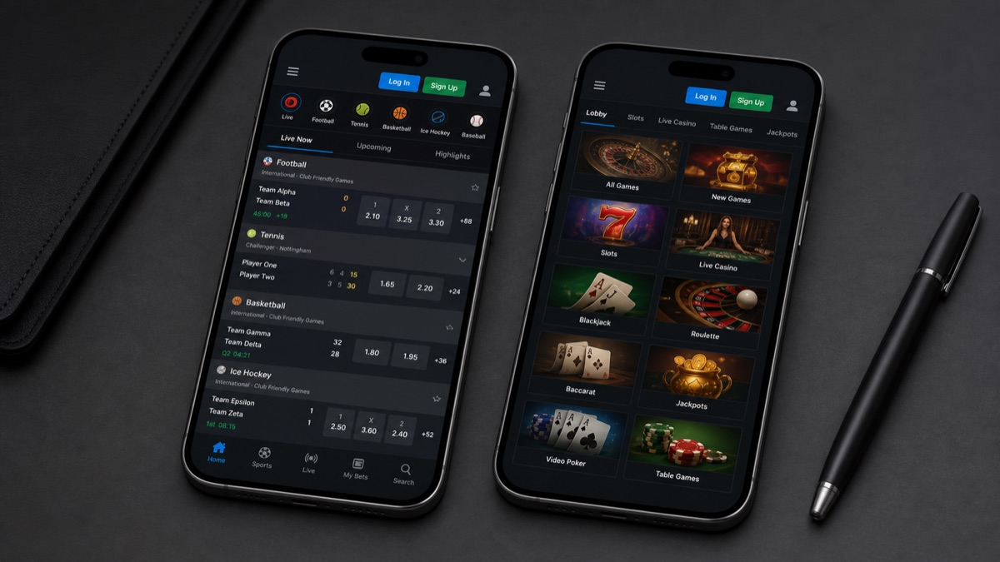

Alternative per Android e iPhone
18+ · Importi massimi promozionali. Termini, deposito e requisiti di puntata applicabili.
Cerchi la app Chancebet per scaricarla o entrare nel tuo conto? Il vecchio chancebet.it non fa più entrare nessuno, ma niente panico — non è sparito niente. Qui ti spiego cosa cambia per chi aveva l'app, come scarichi la versione mobile sotto il nuovo brand, e come girano scommesse, casinò, bonus e pagamenti dallo smartphone.
Chancebet non è più operativo: il passo successivo
Questa informazione riguarda il servizio storico Chancebet. Le offerte operative disponibili oggi sono raccolte nel confronto della pagina.
Per continuare, scegli direttamente una piattaforma attiva dal confronto: SCOMMESSE per il betting oppure CASINÒ per slot e giochi live.
Chancebet non è più operativo: il passo successivo
Il passo successivo è confrontare bonus, pagamenti e requisiti delle piattaforme attive, non cercare un nuovo accesso al vecchio brand.
Account, saldo e vecchie credenziali Chancebet
Il vecchio sito non è operativo e questa guida non può confermare lo stato di account, saldo o promozioni precedenti. Non inserire le vecchie credenziali su domini simili e non aprire un nuovo conto credendo che sia la continuazione automatica del precedente.
Se vuoi giocare oggi, crea un percorso nuovo attraverso una piattaforma attiva del confronto. Controlla identità dell’operatore, licenza, documenti richiesti e limiti prima di registrarti.
Scommesse sportive e mercati disponibili su mobile
Il palinsesto copre 28 discipline: il calcio ovviamente davanti a tutti — Serie A, coppe europee, campionati esteri — poi tennis, basket, volley e sport minori. Da mobile hai sia il pre-match che il live, con quote aggiornate in tempo reale e la possibilità di gestire la bolletta mentre la partita corre.
Un dato che fa alzare le orecchie, emerso dai test indipendenti di Betzoid: il payout sul calcio si assesta intorno al 93,8%, sopra la media italiana del 91-92%. In soldoni: quote mediamente più larghe rispetto a molti concorrenti sui big match. E con i Mondiali 2026 dietro l'angolo, un palinsesto competitivo sul calcio non è certo un dettaglio.
Da ricordare se punti ai bonus: le giocate valide per le promo chiedono quota minima 2.00, singole o multiple, con almeno cinque scommesse al mese.
Casinò, slot e giochi disponibili nell'app
La sezione casinò conta quasi 3.000 titoli tra slot e giochi da tavolo, tutti raggiungibili da mobile senza download extra. Nel catalogo trovi:
- Slot di provider come NetEnt ed Espresso
- Tavoli: Blackjack, Roulette, Baccarat, Poker
- Giochi rapidi: Keno, Bingo, Gratta e Vinci
Le slot girano bene pure su schermi piccoli, con l'interfaccia tarata sul touch. Lo streaming ai tavoli live, come sempre, dipende dalla connessione: sotto 4G/5G o Wi-Fi stabile fila tutto liscio.
Bonus e promozioni per gli utenti dell'app
La promo storica del brand è il bonus mensile sul giocato: si calcola sulla differenza tra giocato e vinto e va dal 15% al 25%. Il coupon arriva il giorno 3 di ogni mese, con un tetto massimo di €750. Le condizioni da tenere a mente:
- validità 1 mese per l'uso su slot, 7 giorni per le scommesse;
- non lo usi sulle giocate a sistema;
- prelevi solo le vincite generate dal coupon;
- per lo sport valgono singole e multiple a quota minima 2.00, minimo 5 scommesse al mese; per il casinò contano solo le slot, per il poker solo il cash.
A questo aggiungi promo periodiche come il cashback e i tornei Drops&Wins sulle slot. Attenzione, però: l'operatore può sospendere promo o conto in caso di giocate speculative o abuso — meglio saperlo prima che dopo.
Depositi, prelievi e metodi di pagamento nell'app
La cassa mobile mette in campo parecchi metodi, senza commissioni sui depositi:
| Operazione | Metodi disponibili | Velocità |
|---|---|---|
| Deposito | Bonifico bancario, Skrill, Rapid Transfer by Skrill, Neteller, Bollettino Postale, Nuvei, PostePay via VirtualPos BancoPosta | Immediato (bonifico e bollettino più lenti) |
| Prelievo | Bonifico bancario, Skrill, Bonifico domiciliato, Neteller, PostePay, prelievo presso punto vendita, Nuvei | Dichiarato immediato |
La velocità dichiarata è immediata, ma i tempi reali di accredito variano col metodo: gli e-wallet (Skrill, Neteller) sono i più rapidi, il bonifico più lento. PostePay e il prelievo in punto vendita sono un tocco tipicamente italiano: chi degli e-wallet non si fida ritira le vincite in contanti allo sportello. Il conto verificato, ovvio, serve prima del primo prelievo.
Domande frequenti sul vecchio sito Chancebet
Il vecchio sito funziona ancora?
No: viene trattato come un brand storico e non come una piattaforma operativa.
Dove posso giocare adesso?
Usa i collegamenti SCOMMESSE o CASINÒ del confronto, che portano alle piattaforme attive configurate nel progetto.
Posso usare le vecchie credenziali?
Non inserirle su domini simili o presunti successori. Una nuova registrazione va effettuata soltanto sulla piattaforma attiva scelta consapevolmente.
Domande frequenti sul vecchio sito Chancebet
Il vecchio sito funziona ancora?
No: viene trattato come un brand storico e non come una piattaforma operativa.